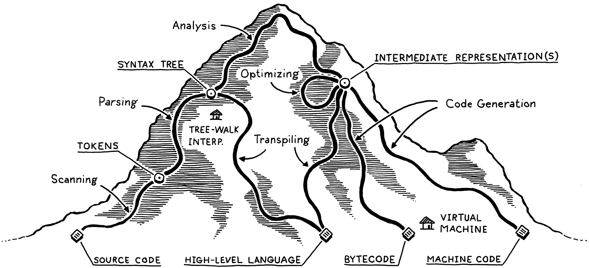
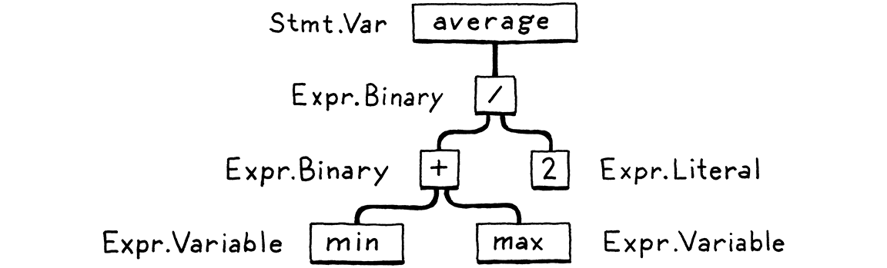
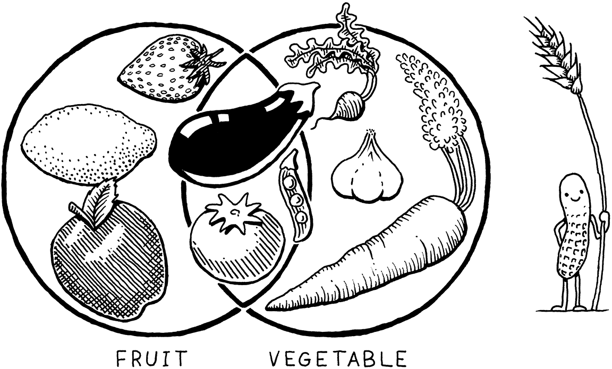
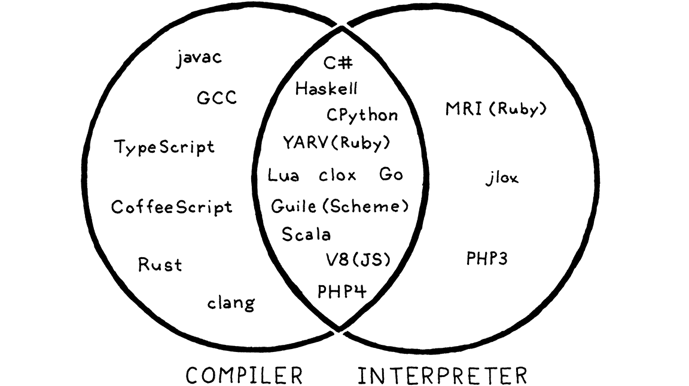

领域地图
不管地图多粗糙，你都必须有一张。不然你就会到处乱走。在《魔戒》里，我从没让任何人 走得超出他当天能走到的距离。
J. R. R. 托尔金
我们可不想在这片地里到处乱走，所以出发之前，先把前几代语言实现者踏勘过的这片地形 扫一遍。这会帮我们弄清要往哪儿走，以及别人都走过哪些备选路线。
先让我约定个简写。本书有大量篇幅在讲一门语言的实现，它跟某种柏拉图式理想形态下的 语言本身是两回事。「栈」「字节码」「递归下降」这些东西，是某个具体实现可能采用的 机械细节。从用户的角度看，只要最终那套装置忠实遵守了语言的规范，那就全都是实现细节。
我们要在这些细节上花很多时间，所以要是我每次提到它们都得写一遍「语言实现」， 手指头都得磨秃了。所以我就用「语言」来指语言本身、或者它的实现、或者两者兼有—— 除非这个区分在此处要紧。
2 . 1一门语言的组成部分
自计算机的黑暗年代起，工程师们就一直在造编程语言。我们刚能跟计算机说话，就发现这事儿 太难了，于是把计算机拉来当帮手。我觉得很有意思的是：尽管今天的机器字面上快了 一百万倍、存储多了好几个数量级，我们造编程语言的方式却几乎没变。
尽管语言设计者探索的范围极其广阔，他们在这片地里踩出的路却屈指可数。 并不是每门语言都走完全一样的路——有些会抄一两条近道——但除此之外，它们都相似得让人 安心，从海军少将格蕾丝·霍珀的第一个 COBOL 编译器，一直到某门炙手可热、能转译成 JavaScript 的新语言——它的「文档」全部内容就是一个 Git 仓库里某个编辑得很糙的 README 文件。
我把一个实现可能选择的路径网络，想象成爬山。你从山脚出发，程序还是原始的源码文本， 字面上就是一串字符。每一个阶段都会分析这个程序，把它变换成某种更高层的表示，在那里 语义——也就是作者想让计算机做的事——会变得更清晰。
最终我们到达山顶。我们俯瞰用户的程序，能看清他们的代码意味着什么。然后我们开始 从山的另一侧下坡。我们把这个最高层的表示一级一级地变换下去，降到越来越低的形态， 越来越接近某种我们真正知道怎么让 CPU 执行的东西。

我们把那些小道和景点一个个走一遍。我们的旅程从左边的用户源码纯文本开始：
2 . 1 . 1扫描
第一步是扫描，也叫词法分析（lexing），或者——如果你想唬住谁—— 词法分析（lexical analysis）。这三个说法指的差不多是同一件事。我喜欢 「词法分析」这个叫法，因为听起来像是某个邪恶的超级反派会干的事，但我打算用 「扫描」，因为它似乎稍微常见一点。
扫描器（或者叫词法分析器）吃进线性排列的字符流，把它们归组成一串更像
「词」的东西。在编程语言里，每一个这样的词都叫一个词法单元。有些词法单元是单个
字符，比如 ( 和 ,；另一些可能有好几个字符长，比如数字（123）、字符串字面量
（"hi!"）和标识符（min）。
源文件里有些字符其实什么意义都没有。空白通常无关紧要，而注释按定义就是被语言忽略的。 扫描器一般会把它们丢掉，留下一个干净的、有意义的词法单元序列。
2 . 1 . 2语法解析
下一步是语法解析。这一步让我们的语法有了一部文法——一种把更小的部件组合成更大 表达式和语句的能力。你在上英语课时给句子画过结构图吗？如果画过，那你干的就是语法解析器 干的事，只不过英语有成千上万个「关键字」，还有一箩筐的多义性。编程语言要简单得多。
语法解析器吃进扁平的词法单元序列，建出一棵跟文法嵌套结构相对应的树。这些树有几种 叫法——语法树或者抽象语法树——取决于它们离源语言的裸语法结构有多近。实践中， 语言黑客通常管它们叫语法树、AST，或者干脆就叫树。

语法解析在计算机科学里有着悠久而丰富的历史，而且跟人工智能圈子关系密切。今天用来语法解析 编程语言的许多技术，最初都是 AI 研究者为了让计算机跟我们说话而构想出来语法解析 人类语言的。
事实证明，人类语言对那些语法解析器能处理的僵硬文法来说太乱太杂了，但对编程语言那种 简单得多的人工文法来说，却严丝合缝。可惜我们这些有缺陷的人类，还是会经常把这些简单 文法用错，所以语法解析器的活儿还包括在我们用错时告诉我们——也就是报告语法错误。
2 . 1 . 3静态分析
前两个阶段在所有实现里都大同小异。到这一步，各门语言各自的特性开始登场了。这时候 我们知道了代码的语法结构——比如哪些表达式嵌套在哪些里面——但除此之外就所知无几。
在 a + b 这样的表达式里，我们知道要把 a 和 b 加起来，却不知道这些名字指的是什么。
它们是局部变量？全局的？定义在哪里？
大多数语言做的第一层分析叫绑定或者作用域解析。对每一个标识符，我们查明 这个名字在哪里定义，然后把两者接起来。作用域就是在这时候登场——某段源码区域， 在那里面某个名字可以用来指代某个特定的声明。
如果这门语言是静态类型的，类型检查就在这一步做。一旦知道了
a 和 b 在哪儿声明，我们还能顺带弄清楚它们的类型。要是哪两个类型没法相加，
我们就报一个类型错误。
深呼吸。我们已经登上山顶，能把用户的程序尽收眼底。分析让我们看见的这些语义洞察，需要找个 地方存起来。有几个地方可以把它们藏进去：
-
很多时候，它会被原样存回语法树自身的属性上——树节点里那些在语法解析阶段不初始化、 留到后面再填上的额外字段。
-
另外一些时候，我们会把数据存在旁边某张查找表里。这张表的键通常是标识符——变量和声明 的名字。那样的话我们就管它叫符号表，而它关联到每个键上的值，就告诉我们这个 标识符指的是什么。
-
最有力的记账工具，是把整棵树变换成一种全新的数据结构，它能更直接地表达代码的语义。 这就是下一节。
到这儿为止的一切，都算实现的前端。你可能会以为之后的就是后端了，但并不是。 在「前端」和「后端」这两个词刚被造出来的年代，编译器要简单得多。后来研究者们发明了 新的阶段，要塞进这两半中间。他们没有丢弃那些老词，威廉·沃尔夫等人干脆把新阶段 统统塞进了一个既俏皮又空间上自相矛盾的名字里：中端。
2 . 1 . 4中间表示
你可以把编译器想成一条流水线，每个阶段的活儿都是把代表用户代码的数据整理成某种形式， 好让下一个阶段实现起来更简单。流水线的前端跟程序所用源语言的具体情况绑定。 后端关心的则是程序最终要跑在哪种架构上。
处在中间，代码可能会存成某种中间表示（IR），它不跟 源形式或目标形式中的任何一个紧密绑死（所以叫「中间」）。IR 扮演的是这两种语言之间的 接口。
这样你就能少费不少力气，同时支持多种源语言和目标平台。假设你想实现 Pascal、C 和 Fortran 的编译器，还想覆盖 x86、ARM 以及，我也不知道，SPARC。通常这意味着你得写 九个完整的编译器：Pascal→x86、C→ARM，以及其他所有组合。
一个共享的中间表示能把这个数量大幅削减下来。你为每种源语言 写一个前端来产出 IR，然后为每种目标架构写一个后端。现在你可以把这两边随意搭配， 得到所有组合。
我们想把代码变换成某种让语义更清晰的形式，还有另一个重要原因……
2 . 1 . 5优化
一旦我们理解了用户程序的含义，就可以把它换成一个语义相同但实现得更高效的程序—— 我们可以对它做优化。
一个简单的例子是常量折叠：如果某个表达式的求值结果永远精确相同，我们就可以在 编译时把那部分算掉，用它的结果替换掉表达式的代码。如果用户写了：
pennyArea = 3.14159 * (0.75 / 2) * (0.75 / 2);
我们可以在编译器里把这些算术全做完，把代码改成：
pennyArea = 0.4417860938;
优化是编程语言这门生意里很大的一块。很多语言黑客把整个职业生涯都花在这儿， 从编译器里榨出每一滴性能，好让自己的 benchmark 快上百分之零点几个百分点。 这很容易变成一种执念。
本书里我们会基本上跳过那个老鼠洞。很多成功的语言， 编译期优化少得出奇。比如 Lua 和 CPython 生成的代码相对没怎么优化，它们把大部分 性能功夫都花在运行时。
2 . 1 . 6代码生成
我们把能想到的优化全都施加到用户程序上了。最后一步是把它转换成机器真能跑的形式。 换句话说，就是生成代码（或者简称代码生成），这里的「代码」通常指 CPU 执行的那类 原始汇编式指令，而不是某个人可能想读的「源代码」。
最后，我们进入后端，从山的另一侧下行。从这里开始，我们对代码的表示会越来越原始， 就像把演化倒着放一遍，越来越接近我们那台头脑简单的机器能理解的东西。
我们有个决定要做。是为真实 CPU 生成指令，还是为虚拟 CPU 生成？如果生成真实的机器码， 我们就能得到一个操作系统可以直接加载到芯片上的可执行文件。本地代码快如闪电， 但生成它的工作量很大。今天的架构里有成堆的指令、复杂的流水线，还有足够塞满波音 747 行李舱的历史包袱。
说芯片的语言还意味着你的编译器跟某个特定架构绑死了。如果你的编译器目标是 x86 机器码，它就没法在 ARM 设备上跑。往回追到六十年代计算机架构的寒武纪大爆发 时期，这种不可移植性可是实打实的障碍。
为了绕开这一点，BCPL 和 Pascal 的发明者马丁·理查兹和尼克劳斯·维尔特， 让他们的编译器产出虚拟机器代码。他们产出的不是给某块真实芯片的指令，而是给一台 假想的、理想化的机器的代码。维尔特把这东西叫做 P 代码，P 取自 portable（可移植）； 但今天我们一般管它叫字节码，因为每条指令往往只有一个字节长。
这些人造指令被设计成更贴近语言本身的语义，而不那么受某一种计算机架构及其积累的历史 包袱牵制。你可以把它想成这门语言底层操作的密集二进制编码。
2 . 1 . 7虚拟机
如果你的编译器产出字节码，那活儿到这儿还没完。既然没有哪块芯片懂那种字节码，翻译 就是你的活了。又一次，你有两个选择。 你可以为每个目标架构写一个小小的迷你编译器，把字节码转换成该机器的本地代码。你支持的 每一块芯片还是得干活，但最后这个阶段相当简单，而且流水线前面的部分你可以在所有 支持的机器之间复用——你基本上是在拿字节码当中间表示。
或者你可以写一个虚拟机（VM），一个程序，在运行时模拟 一台支持你虚拟架构的假想芯片。在虚拟机里跑字节码，比提前翻译成本地代码要慢，因为 每条指令每次执行时都得在运行时模拟一遍。作为回报，你换来的是简单和可移植。用 C 之类的语言实现你的 VM， 你的语言就能在任何有 C 编译器的平台上跑。这就是本书第二个解释器的 工作方式。
2 . 1 . 8运行时
我们终于把用户程序锤成了一种我们能执行的形式。最后一步就是把它跑起来。如果我们把它 编译成了机器码，只要让操作系统加载这个可执行文件，它就开始跑了。如果我们把它编译成了 字节码，就得启动 VM 并把程序加载进去。
两种情况下，除了最底层的那种语言之外，我们通常都需要语言在程序运行期间提供一些 服务。比如，如果语言自动管理内存，我们就需要一个垃圾回收器在跑，好回收没用的比特。 如果我们的语言支持 「instance of」测试，让你看清手里拿的是什么类型的对象，那我们就 需要某种表示来在执行期间跟踪每个对象的类型。
这些玩意儿统统在运行时，所以恰如其名，叫做运行时。在完全编译的语言里，实现运行时 的代码会被直接嵌进最终的可执行文件里。比如在 Go 里，每个编译出来的应用都直接 内嵌了自己那份 Go 运行时。如果语言是在解释器或 VM 里跑的，那运行时就活在那边。 Java、Python 和 JavaScript 这些语言的大多数实现都是这么干的。
2 . 2捷径与备选路线
上面那条长路涵盖了所有你可能实现的阶段。很多语言确实会把整条路走完，但也有一些捷径 和备选路线。
2 . 2 . 1单遍编译器
有些简单的编译器把语法解析、分析和代码生成交织在一起，直接在语法解析器里生成输出代码， 从不分配任何语法树或其他 IR。这类单遍编译器限制了语言的设计。 你没有中间数据结构来存放关于程序的全局信息，也不会回头重看任何已经语法解析过的代码部分。 这意味着一旦你看到某个表达式，你就必须已经知道足够多，才能正确地编译它。
Pascal 和 C 都是围着这个限制设计的。在那个年代，内存金贵到一个编译器可能连整个 源文件都装不进内存，更别提整个程序了。这就是为什么 Pascal 的文法要求类型声明必须 出现在一个块的开头。也是为什么在 C 里，你不能在函数定义之前调用它， 除非你有一个显式的前向声明，告诉编译器为了给那个后面才定义的函数生成调用代码，它需要 知道些什么。
2 . 2 . 2树遍历解释器
有些编程语言在把代码语法解析成 AST（可能顺便做一点静态分析）之后就立刻开始执行。 为了运行这个程序，解释器一次遍历语法树的一个分支或一个叶子，边走边对每个节点求值。
这种实现风格在学生作业和小型语言里很常见，但因为往往偏慢，并没被广泛用于 通用语言。有些人用「解释器」只指这一类实现，另一些人给这个词 下的是更宽的定义，所以我用不容置疑的树遍历解释器来指它们。我们要写的第一个解释器 走的就是这条路。
2 . 2 . 3转译器
给一门语言写完整的后端可以是个大工程。如果你手头已经有个 现成的通用 IR 可以作为目标，你可以把自己的前端接到它上面。不然的话，你就好像被困住了。 但要是你把另一门源语言当成某种中间表示来对待呢？
你为自己的语言写一个前端。然后在后端，你不去做那些把语义降级到某个原始目标语言的 全部工作，而是产出另一门语言的合法源码字符串——那门语言的高级程度和自己的差不多。 然后，你用那门语言现成的编译工具，作为你下山逃出、奔向可执行形式的出路。
过去人们管这叫源到源编译器或者转编译器。自从那些为了在浏览器里跑而编译成 JavaScript 的语言火起来之后，它们又染上了那个时髦头衔：转译器。
当最早的转译器还只是在汇编语言之间翻译时，今天大多数转译器已经在处理更高层的语言了。 自从 UNIX 病毒式扩散到各式各样的机器之后，就形成了一个漫长的传统：编译器的输出语言 是 C。凡是 UNIX 所在之处就有 C 编译器，而它们生成的代码效率又高，所以把 C 当目标 是让你的语言在大量架构上跑起来的好办法。
Web 浏览器是今天的「机器」，它们的「机器码」是 JavaScript，所以如今看起来 几乎每门语言都有一个以 JS 为目标的编译器，因为那是让你的代码在浏览器里跑起来的 主路径。
转译器的前端——扫描器和语法解析器——跟别的编译器没什么两样。然后，如果源语言只是 目标语言之上的一层简单语法皮，它可能整个跳过分析，直接输出目标语言里对应的语法。
如果两种语言在语义上差别更大，你就会看到完整编译器里更多的典型阶段，包括分析， 甚至可能还有优化。然后，到了代码生成这一步，你不是输出机器码那种二进制语言， 而是产出目标语言里一段语法正确的源码（好吧，目标）代码。
不管走哪条路，你接下来把这段产出的代码丢进目标语言现成的编译流水线里，就可以开工了。
2 . 2 . 4即时编译
最后这个与其说是捷径，不如说是一条留给专家的危险攀岩小路。执行代码最快的办法是把它 编译成机器码，可你未必知道最终用户的机器支持什么架构。怎么办？
你可以做 HotSpot Java 虚拟机（JVM）、微软的通用语言运行时（CLR），以及大多数 JavaScript 解释器都在做的事。在最终用户的机器上，程序被加载的时候——JS 是从源码加载， JVM 和 CLR 是从与平台无关的字节码加载——你把它编译成用户那台电脑架构所能执行的 本地代码。这自然就叫即时编译。大多数黑客就直接说「JIT」，发音跟「fit」押韵。
最先进的 JIT 会在生成的代码里插入性能分析钩子，看看哪些区域对性能最关键、 流经它们的是什么类型的数据。然后随着时间推移，它们会自动用更高级的优化来重新编译那些 热点。
2 . 3编译器与解释器
现在我往你脑袋里塞了一整本编程语言行话，终于可以回答一个从远古就困扰着程序员的问题： 编译器和解释器有什么区别？
事实证明，这就像问水果和蔬菜的区别。看起来像个非此即彼的二选一，但实际上「水果」是个 植物学术语，「蔬菜」是个烹饪学术语。一个并不严格蕴含另一个的否定。有些水果不是 蔬菜（苹果），有些蔬菜不是水果（胡萝卜），但也有可食植物既是水果又是蔬菜， 比如番茄。

那么回到语言：
-
编译是一种实现技术，它涉及把源语言翻译成某种别的形式——通常是更低层的形式。 当你生成字节码或机器码时，你在编译。当你转译到另一门高级语言时，你也是在编译。
-
当我们说某个语言实现「是编译器」时，我们的意思是它把源码翻译成别的形式，但 不执行它。用户得自己拿着产出的结果去跑。
-
反过来，当我们说某个实现「是解释器」时，我们的意思是它吃进源码并立刻执行。 它「从源码」运行程序。
就像苹果和橘子一样，有些实现明显是编译器而不是解释器。GCC 和 Clang 拿你的 C 代码 编译成机器码。最终用户直接运行那个可执行文件，可能一辈子都不知道它是用哪个工具编译的。 所以就 C 而言，那些是编译器。
在 Matz 的 Ruby 正统实现的早期版本里，用户是从源码运行 Ruby 的。那个实现把源码语法解析出来， 直接遍历语法树执行。没有任何其他翻译发生，无论内部还是用户能看见的形式。 所以就 Ruby 而言，那肯定是个解释器。
那 CPython 呢？当你用它运行 Python 程序时，代码会被语法解析并转换成一种内部字节码格式， 然后在 VM 里执行。从用户角度看，这显然是个解释器——他们是从源码运行程序的。 但如果你掀开 CPython 那身鳞片看看，就会发现里面确实有编译在发生。
答案是它两者都是。CPython 是解释器，也有编译器。实践中， 大多数脚本语言都是这么干的，你看：

中间那块重叠区域也是我们第二个解释器所在的地方，因为它内部也会编译到字节码。所以 虽然这本书名义上是讲解释器的，我们也会讲到一些编译。
2 . 4我们的旅程
这一口气要消化的东西可真不少。别担心。反正这一章不是要求你理解所有这些零件。 我只想让你知道它们都存在，以及大致是怎么拼在一起的。
等你在本书的导览路线之外继续探索这片领域时，这张地图会对你很有用。我希望读完 你会有一种冲动，想自己走出去，在这整座山上到处乱逛。
不过现在，我们自己的旅程该开始了。系紧鞋带，背好行囊，跟上来。从这里 开始，你唯一要专注的，就是眼前这条路。
习题
-
挑一门你喜欢的语言，找它的一个开源实现。下载源码，在里面翻翻找找。试着找到实现 扫描器和语法解析器的代码。是手写的，还是用 Lex、Yacc 之类的工具生成的？ （
.l或.y文件通常意味着后者。） -
即时编译往往是实现动态类型语言最快的办法，但并不是所有语言都这么做。 有哪些理由会让你不用 JIT？
-
大多数编译到 C 的 Lisp 实现里，还都带一个解释器，好让它们能顺手执行 Lisp 代码。 为什么？